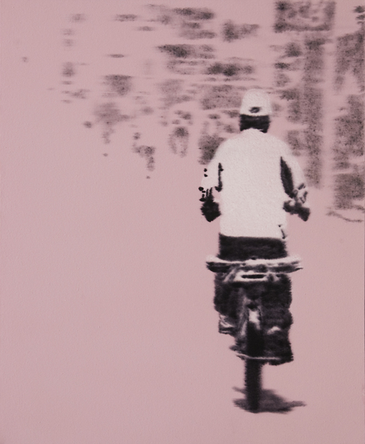
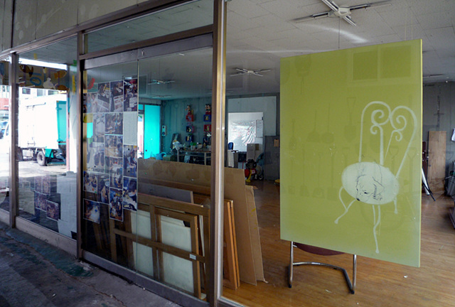
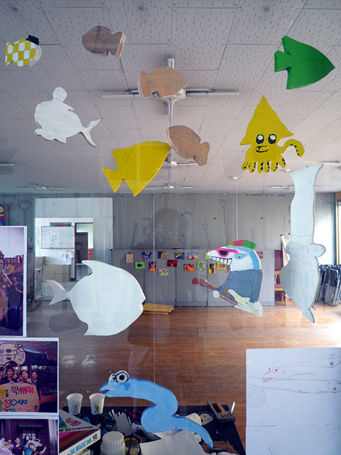
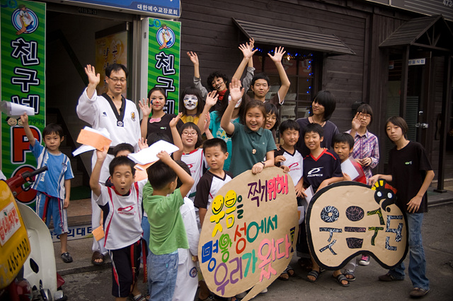
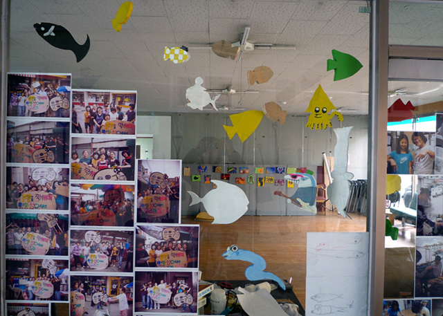
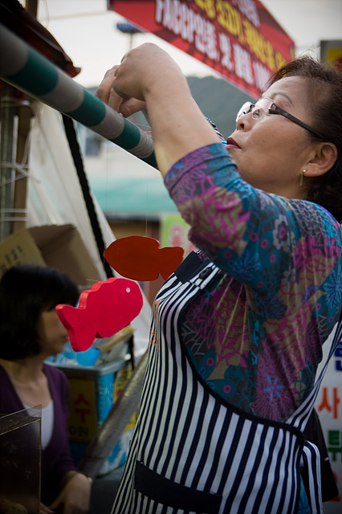
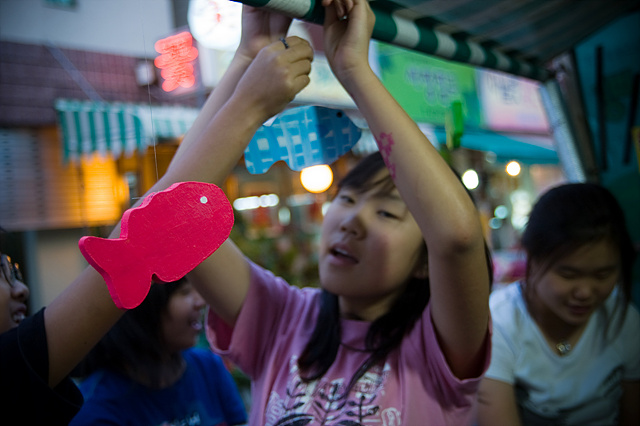

국내작가 권진수는 <2008 SAP 석수아트프로젝트>에서 소소한 일상의 아름다움을 찾아보는 작업을 진행하며 크게 두 가지의 형태로 나눌 수 있다. 첫째는 안양과 석수시장을 오가며 스쳐 지나가는 일상의 기억들 속에서 피어나는 영상성(scenarization)을 평면작업의 형태로 기록하는 작업이다. 두 번째 작업은 지역 학교(중등대안학교 더불어 가는 배움터 길/이은누리 외 13명) 학생들과 석수시장에서의 즐거움을 찾아보는 ‘석수엔터테인먼트’ 프로젝트를 진행한다. 석수엔터테인먼트 프로젝트는 8월 한달간 석수시장 현장조사와 인터뷰 등을 통해 시장 주민들과 소통하는 시간을 가졌다. 9월부터는 학생들과 시장주민들의 소통을 위한 ‘웃찍사 퍼포먼스’가 시작되었다. 시장에 웃음이 넘칠 수 있도록 시장을 돌아다니며 때론 주민들의 어깨를 주물러 드리고 때론 따뜻한 포옹 등을 통해 밝은 웃음으로 시작된 만남들을 지속적인 만남으로 유지하려고 노력하고 있다. 붕어빵 가게, 분식집, 미용실, 생선가게 등을 돌며 밝고 싱싱한 시장이 될 수 있도록 무엇인가를 관찰하기, 스케치하기, 그리기, 만들기에 학생들은 몰입하고 있다. 그 무엇인가는 10월부터 석수시장에 조금씩 보여지고 있다. 10월 17일 시작되는 오픈스튜디오에서 권진수 작가의 안양과 석수시장 주변의 숨겨진 아름다운 모습들을 담은 평면작업은 물론 학생들과 함께 석수시장의 즐거움을 찾아보는 석수엔터테인먼트 프로젝트의 과정과 결과물들이 설치, 영상 등의 형태로 보여질 계획이다.
Jin-Soo Kwon's project, which is about searching for simple, everyday beauties, can be divided into two parts. The first part consists of inscribing the scenarization of the everyday memories one acquires from passing through Anyang and Seoksu Market in 2D format. The second part is the Seok-Su Entertainment project, which entails finding playful pleasures in Seok-Su Market with students Lee Un-nuri and 13 other students from the local middle school.). In August, the Seoksu Entertainment project took time to interact with the market people through interviews and market surveys. In September, a photo project recording people laughing at performances was launched to enhance communication between the students and the people of the market. To fill the market place with laughter and to strengthen the many relationships created through laugherther, students visited the market to engage the people there through performance, and embraces. The students also concentrated on walking around the small sweet shops, snack stops, barbershops, fish stalls, and other shops in the market to discover what can be done to make the place better, and to make sketches, drawing, and figures. Beginning in October, Kwon Jin-soo installed and showed the images of hidden beauty found in Anyang, and the results of the entertainment project were also exhibited as part of the open studio on the 17th.
2009-01-08
saptap.egloos.com 에서 옮김

시간이 흐를수록 나와 상관없는 사람들과 사물들이 내게 다가온다.
망각되어 무의식의 세계로 넘어가버린 줄 알았던 그 기억들이 다가온다.
그 기억 속에서 기쁨과 눈물, 반가움과 아쉬움의 감정이 내 눈을 흐릿하게 만든다.
짧지만 뜨거운 그 일상의 착각들이..
- 권진수의 작업노트 중에서
 
석수 엔터테인먼트
웃찍사 퍼포먼스
웃음을 찍기위해 명왕성에서 우리가 왔다.

1930년 2월 18일 처음 발견할 때는 명왕성이 지구 크기였다고 생각되었지만,
이후 허블 우주 망원경에 의해 명왕성은 달 정도의 크기를 가지는 것으로 판명되었습니다. 이때부터 '너무 작다'는 의견이 많았죠.
그리고 이후에 발견된 소행성들과 같은 성질을 가지고 있다는 것 때문에 매년 IAU에선 논란이 일었던 것으로 알고 있습니다.
그리고 76년이 지난 지금 결국 퇴출되었네요. 명왕성에 대해 보충하자면 평균 거리가 5,906,376,272km 적도반지름이1,150km(지구의 0.18배) 평균밀도는 2.03g/cm³(지구밀도의 40%) 공전주기가 90,613일 (248.09년)이랍니다.
명왕성은 명왕성대로 자기 소임을 다하여 공전하고 있을텐데 누가 누굴를 퇴출한다는 것인지는 잘 모르겠습니다.
그 멀리서 같은 처지에 놓인 석수시장을 찾아와 위로와 웃음을 찾아 주려고 애쓰는 명왕성 친구들이 고맙네요^^

2008년 10월 9일 석수 엔터테인먼트
석수시장 붕어빵 가게에 웃음꽃이 피다.
권진수 작가와 대안학교 배움터 길 학생팀(이은누리외 12명)
 